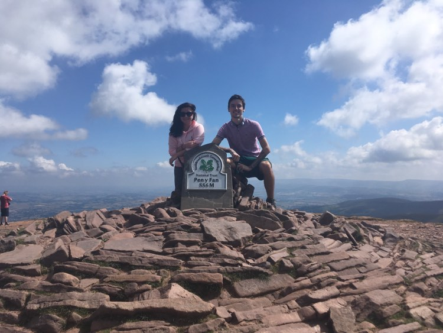
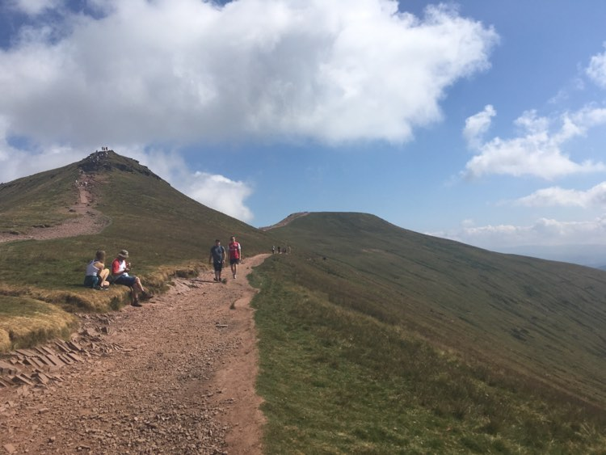

Pen-Y-Fan
Tour Details
- Pick up from Cardiff at 8:00 and Swansea at 09:00
- Drive to Pen-Y-Fan and introduction to the group
- Pen-Y-Fan climb at steady pace with lunch break after 2 hours
- Pen-Y-Fan height: 886m. Difficulty level: Medium
- Lunch options: Ham & Cheese Baguette/Cheese & Onion Baguette/Tomato & lettuce salad
- Stop at the top on Pen-Y-Fan for pictures and sightseeing for 30 min
- Descending back to the minivan
- Drive back to the pick up/drop off locations
- Total duration of the tour: aprox 7 hours
- Cardiff pick up/drop off location: Mercure Holland House Hotel & Spa -24 Newport Road, CF24 0DD
- Swansea pick up/drop off location: The Grand Hotel Swansea -Ivey Pl, SA1 1NX
More details


Brecon Waterfalls
More details
Tour Details
- Pick up from Cardiff at 8:00 and Swansea at 09:00
- Drive to Brecon Waterfalls car park and introduction to the group
- Trek to the first 2 waterfalls at a steady pace with lunch break after 2 hours
- Lunch options: Ham & Cheese Baguette/Cheese & Onion Baguette/Tomato & lettuce salad
- Stop at each waterfall for pictures and sightseeing for 10 minutes
- Walk back back to the minivan
- Drive back to the pick up/drop off locations
- Total duration of the tour: aprox 8 hours
- Total distance to walk: aprox 4km between all 4 waterfalls
- Cardiff pick up/drop off location: Mercure Holland House Hotel & Spa -24 Newport Road, CF24 0DD
- Swansea pick up/drop off location: The Grand Hotel Swansea -Ivey Pl, SA1 1NX
Margam Park
Tour Details
- Pick up from Cardiff at 8:00 and Swansea at 09:00
- Drive to Margam Park car park and introduction to the group
- Visit Margam Castle with lunch break after 2 hours
- Lunch options: Ham & Cheese Baguette/Cheese & Onion Baguette/Tomato & lettuce salad
- Take a ride on the Margam Visitors Train for 1 hour
- Explore the park for 3 hours, including the Old Wedding Venue
- Drive back to the pick up/drop off locations
- Additional activity: Go Ape Zipline
- Go Ape Zipline ticket is not included in the package
- To book Go Ape Zipline click here
- Total duration of the tour: aprox 7 hours
- Cardiff pick up/drop off location: Mercure Holland House Hotel & Spa -24 Newport Road, CF24 0DD
- Swansea pick up/drop off location: The Grand Hotel Swansea -Ivey Pl, SA1 1NX
More details